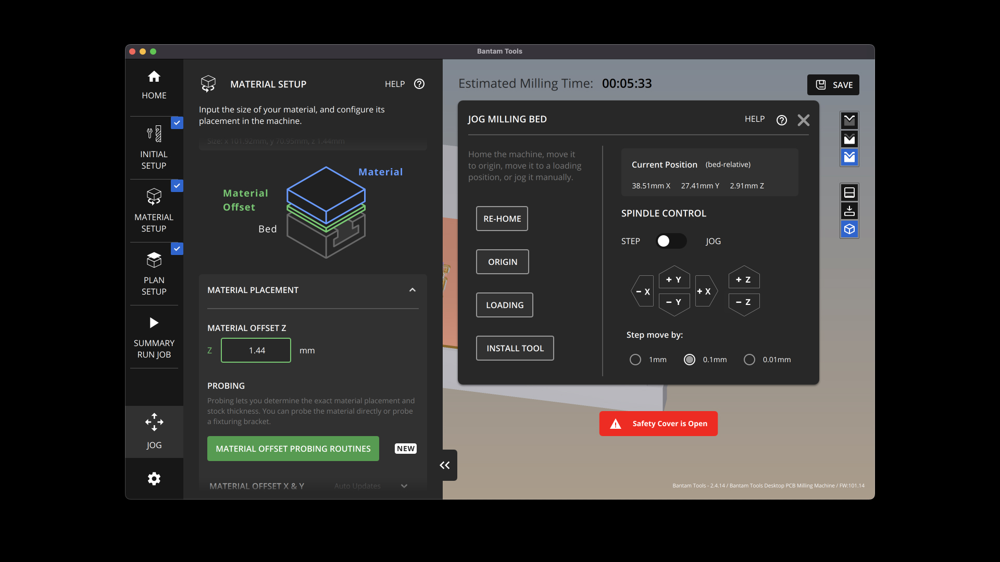

Tools & Software

Before you start, plug in your machine and download all the software.
Step 1: Design
Tools or software required: Rhino
1. I measured and wrote down the dimension of your material (height, width, and thickness). The dimensions of my material was 101.92mm x 70.95mm x 1.4mm.

2. I opened Rhino and created a bounding box that matched the height and depth of my material. I titled that layer “Material” and lock it once you are done.
3. In a separate layer titled “Cutting,” I used the "Rectangle" command to create the first panel. I created a 20mm square.
4. I used the "Rectangle" command again to create the “slots” in your box. I used the thickness of my copper material as the width of these slots so that the sides of my box fit together evenly without anything sticking out.
5. I added the “dogbones” to clear space for the corners of those slots since the drill wouldn't be able to chip away at at the right angles.
6. To create the panel that will connect to this one, I used the “Copy” command to duplicate this curve.
7. I transformed the slots of that second curve into slats that will fit into the slots of the first curve by moving them to the outside of the curve – making sure the y-axis of those curves stayed the same.
8. To make sure the final cut parts actually fit together, I reduced the height of the slat by 7%. I did this by selecting the two points of the curve, clicking the y-axis arrow (indicating the direction I want to move the selected points), and entering in the desired value. I had to play with this value a bit to get the perfect fit so that the parts I created weren't too loose or too tight.
Once the heights of the slats were reduced, I made sure to center-align this shape with the slots in the other rectangle.
9. I then moved the dogbones so they cleared the corners in the second curve.

10. Checking fit and alignment. For the prints to fit, the slats should be slightly shorter than the height of the slots.
11. I used the “Trim” command or “CurveBoolean” to trim away elements from both curves.
12. I used the "Copy" command to duplicate the curves to create the other two pieces that I needed to create a box.
13. I exported the file (cut only) as a .dxf.
Step 2: Set up
The following documentation is a summary of the steps that are captured in much more detail in Junchao and Danli's "Fabrication prep for Bantam tool" guidelines.

1. I launched Kicad and imported my .dxf file and made sure the design matched the design in Rhino.
2. I plotted my design as a gerber file, plotting only "Edge.Cuts" and exported my design as a .gbr file.
Set up
The following documentation is a summary of the steps that are captured in much more detail in Junchao and Danli's "Fabrication prep for Bantam tool" guidelines.
1. I launched Kicad and imported my .dxf file and made sure the design matched the design in Rhino.
2. I plotted my design as a gerber file, plotting only "Edge.Cuts" and exported my design as a .gbr file.
Step 3: Mill
The following documentation is a summary of the steps that are captured in much more detail in Junchao and Danli's "Fabrication prep for Bantam tool" guidelines.
1. I plugged in the CNC mill and launched the Bantam tool app
2. I double-side taped my material to another FR1 board (sacrificial layer) and taped that the the bed of the mill.
3. I added the end mill and started the process by calibrating the z-axis of the milling bed – using the spindle control to make the adjustments.
4. I imported my .dxf file and configured my settings, making sure to toggle off "Traces" and "Holes" in the Toolpaths section since my design was cut only. My first run was a failure because I hadn't done this.
{kind=link}
5. I finalized the rest of my settings. I measured and inputted my material dimensions and z-offset value and pressed print.
It took me two tries to nail the optimal measurement of my slats. The slats in the first design wasn't short enough to fit into the slots. I adjusted the percentage of the heights of the slats in Rhino from 95% to 93% of the height of the slots. Went through the workflow again and pressed print in the Bantam tool. And when I did that...

The parts fit! üò≠ü§∏üèΩ
Source files:
Big thanks to our TA Junchao for his patience and support during Office Hours.
Shout out to Akshay, Noelle, and the peeps on Discord for peer support and guidance.
Much love to Sara Cagle for being my on call emotional and tech support.